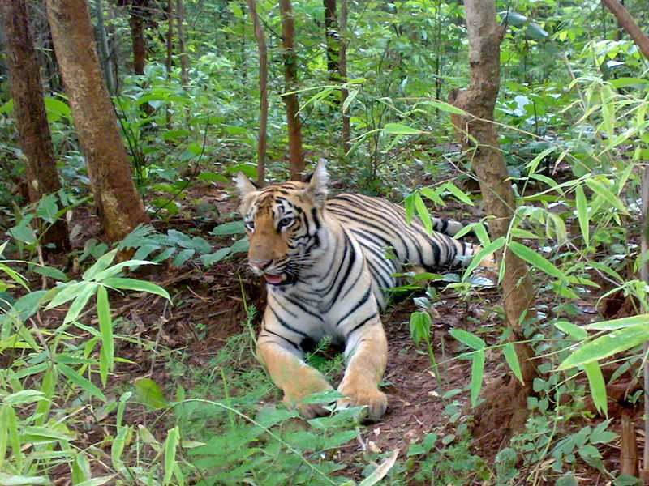
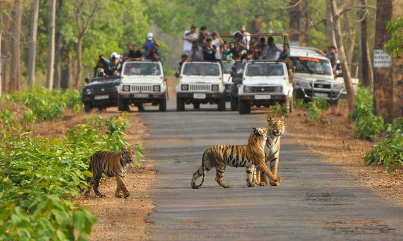
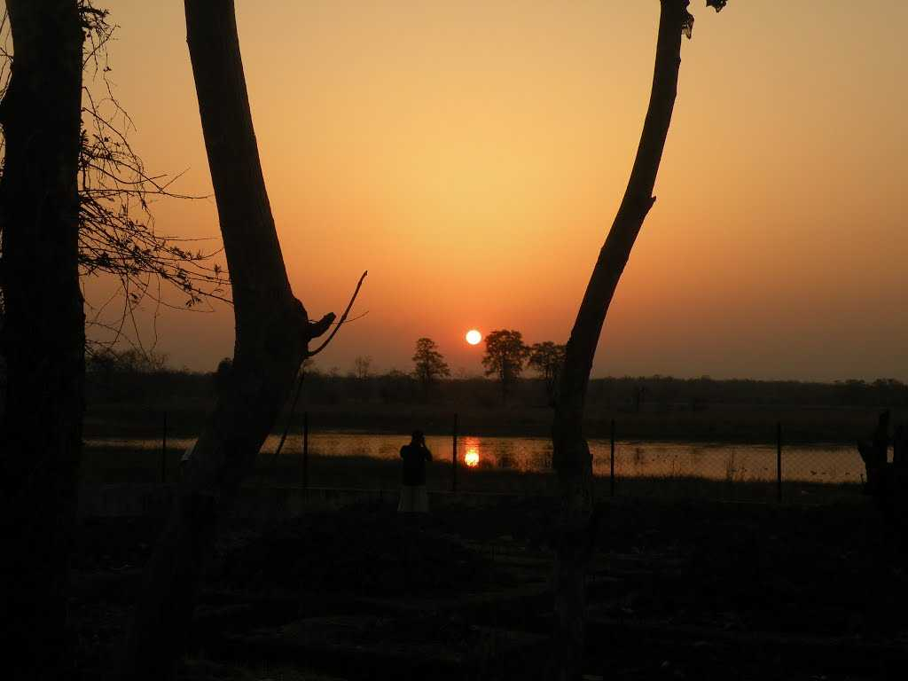
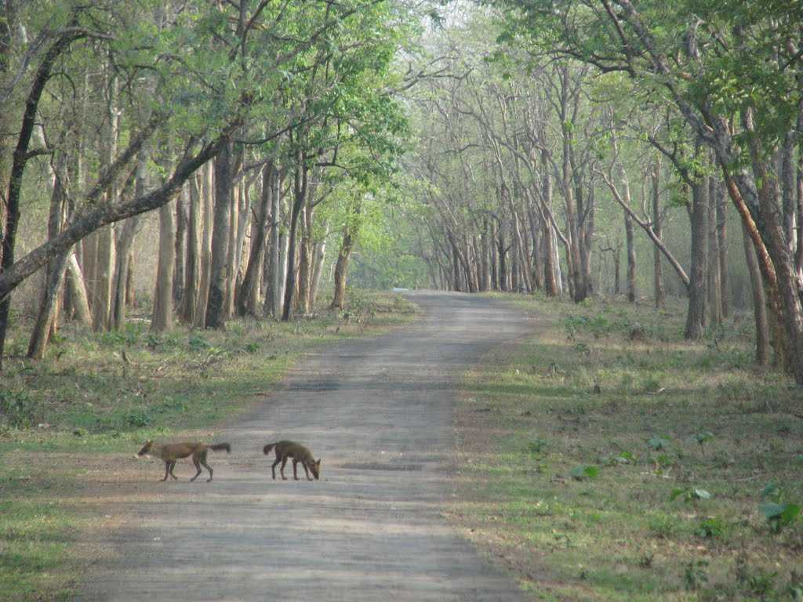

Tadoba National Park, also known as Tadoba Andhari Tiger Reserve, is the oldest and largest national park in Maharashtra. Located in Chandrapur district, it is renowned for its thriving tiger population, diverse wildlife, and scenic landscapes. The park covers an area of 1,727 sq. km and is a paradise for nature and wildlife lovers.
Timings: 6:00 AM - 10:00 AM & 3:00 PM - 6:00 PM
Entry Fees: Varies based on safari type (Jeep Safari, Canter Safari). Advance booking recommended.
Main Attractions: Tigers, leopards, sloth bears, Indian bison, diverse bird species, and the beautiful Tadoba Lake.
The best time to visit Tadoba National Park is from October to June, with the peak wildlife sighting season from March to May. The park remains closed during the monsoon season (July-September).


